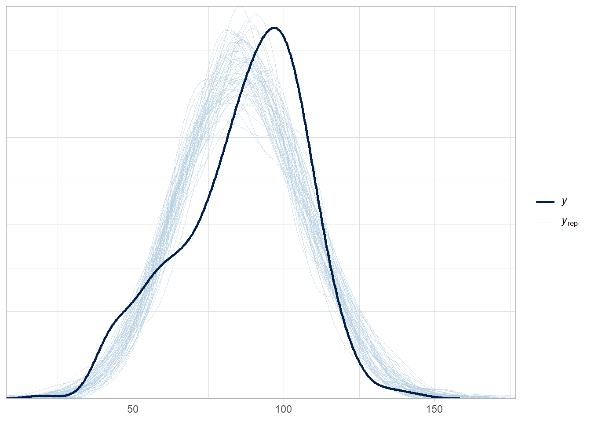
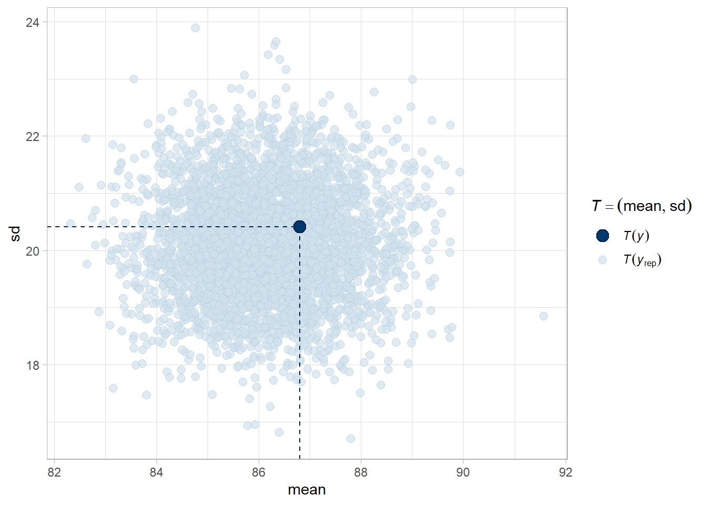

This section is my notes from DataCamp course Bayesian Regression Modeling with rstanarm. The course refers to Andrew Gelman’s book “Bayesian Data Analysis” (Gelman2013?). It is an intuitive approach to Bayesian inference.
Frequentist regression estimates fixed population parameters from a random sample of data whose test statistics are random variables. The Bayesian approach to regression works the other direction: Bayesian regression characterizes the distribution of the random variable population parameters from the evidence of a fixed sample of data.
The frequentist p-value is the probability of observing a test statistic of equal or greater magnitude if the null hypothesis is true. The 95% confidence interval has a 95% probability of capturing the population value (repeated sampling would produce similar CIs, 95% of which would capture the population value). The 95% credible interval captures the confidence the value falls within the range. There is an important difference here. In the Bayesian framework, you can state the probability the parameter value falls with a specified range, but there is no equivalent in frequentist regression.
Bayesian regression uses maximum likelihood to fit the model because the integral in the denominator (the marginal distribution) cannot (or is difficult) to calculate analytically. Instead, the algorithm samples from the posterior distribution in groups (chains). Each chain begins at a random location. Each sample (iteration) moves toward the area where the combination of likelihood and prior indicates a high probability of the true parameter value residing. The more iterations per chain, the larger the total sample size, and more robust the outcome. The chains need to converge to have a stable estimate. The iterations prior to convergence are sometimes referred to as the “warm up” and are not included in the posterior distribution estimate. By default, the rstanarm package estimates 4 chains, each with 2,000 iterations, and the first 1,000 set aside as warm-up. The final posterior combines the chains, so is composed of 4,000 iterations.
A Bayesian model estimates each coefficient parameter and model error with a prior*likelihood/marginal dist = posterior framework.
Show the code
library(rstanarm)conflicted::conflicts_prefer(rstanarm::exponential)sink(type ="message")stan_mdl <-stan_glm(kid_score ~ mom_iq, data = kidiq)
Bayesian estimation samples from the posterior distribution, so there is no point estimate and test statistic.
8.2 Model Evaluation
The R-squared statistic is not available from the summary object, but you can still calculate it manually from the model data, or use the bayes_R2 function.
Show the code
sse <-var(stan_mdl$residuals)ssr <-var(stan_mdl$fitted.values)sst <- ssr + sser2 <-1- sse/sst# bayes_R2 returns a vector of length equal to the posterior sample size.bayes_R2(stan_mdl) %>%summary()
Min. 1st Qu. Median Mean 3rd Qu. Max.
0.09727 0.18469 0.20561 0.20717 0.23031 0.32374
Show the code
bayes_R2(stan_mdl) %>%quantile(c(.025, .975))
2.5% 97.5%
0.1440839 0.2734257
Bayesian regression has other model fit statistics.
Show the code
# Calculate posterior predictive scorespredictions <-posterior_linpred(stan_mdl)# Print a summary of the 1st replicationsummary(predictions[1,])
Min. 1st Qu. Median Mean 3rd Qu. Max.
69.03 79.86 85.54 86.82 93.13 110.72
Or produce a posterior predictive model check.
Show the code
# peaks of observed data and model are similar places, but there is a second # mode of popularity scores around 10 that is not captured by the model.pp_check(stan_mdl, "dens_overlay")

Show the code
pp_check(stan_mdl, "stat")
Show the code
# mean and sd of the observed data in middle of expected distribution - these # two characteristics are recovered well.pp_check(stan_mdl, "stat_2d")

8.2.1 Model Comparison
Use the loo (leave on out) package to compare models. loo approximates cross-validation. In the initial summary, 4000 is the number of iterations in the posterior, and 434 is the number of observations in the data set.
ekpd_loo is the LOO estimate; p_loo is the effective number of parameters in the model; and looic is the LOO estimate converted to the deviance scale, -2 * LOO.
Show the code
stan_loo <-loo(stan_mdl)stan_loo
Computed from 4000 by 434 log-likelihood matrix.
Estimate SE
elpd_loo -1879.0 14.9
p_loo 3.0 0.3
looic 3757.9 29.8
------
MCSE of elpd_loo is 0.0.
MCSE and ESS estimates assume MCMC draws (r_eff in [0.8, 1.0]).
All Pareto k estimates are good (k < 0.7).
See help('pareto-k-diagnostic') for details.
The statistics are not useful in isolation - they should be used in comparison to competing models.
Show the code
stan_mdl_2 <-stan_glm(kid_score ~ mom_iq * mom_hs, data = kidiq)
Which model has more predictive power? As a rule of thumb, if the absolute value of the difference is greater than the standard error, then the result is significant. In this case, the new model is significantly better.
Use tidy() to pull out the intercept and slope. Use the posterior distributions to create a predicted regression line from each draw in the posterior samples. These lines will show the uncertainty around the overall line.
```{r include=FALSE}library(tidyverse)library(MCMCglmm)library(mixAK)```# Bayesian Regression {#BayesRegression}## Compared to Frequentist RegressionThis section is my notes from DataCamp course [Bayesian Regression Modeling with rstanarm](https://campus.datacamp.com/courses/bayesian-regression-modeling-with-rstanarm/). The course refers to Andrew Gelman's book "Bayesian Data Analysis" [@Gelman2013]. It is an intuitive approach to Bayesian inference.Frequentist regression estimates *fixed* population parameters from a *random* sample of data whose test statistics are random variables. The Bayesian approach to regression works the other direction: Bayesian regression characterizes the distribution of the *random* variable population parameters from the evidence of a *fixed* sample of data.The frequentist p-value is the probability of observing a test statistic of equal or greater magnitude if the null hypothesis is true. The 95% confidence interval has a 95% probability of capturing the population value (repeated sampling would produce similar CIs, 95% of which would capture the population value). The 95% *credible interval* captures the confidence the value falls within the range. There is an important difference here. In the Bayesian framework, you can state the probability the parameter value falls with a specified range, but there is no equivalent in frequentist regression.Bayesian regression uses maximum likelihood to fit the model because the integral in the denominator (the marginal distribution) cannot (or is difficult) to calculate analytically. Instead, the algorithm samples from the posterior distribution in groups (chains). Each chain begins at a random location. Each sample (iteration) moves toward the area where the combination of likelihood and prior indicates a high probability of the true parameter value residing. The more iterations per chain, the larger the total sample size, and more robust the outcome. The chains need to converge to have a stable estimate. The iterations prior to convergence are sometimes referred to as the "warm up" and are not included in the posterior distribution estimate. By default, the **rstanarm** package estimates 4 chains, each with 2,000 iterations, and the first 1,000 set aside as warm-up. The final posterior combines the chains, so is composed of 4,000 iterations.A Bayesian model estimates each coefficient parameter and model error with a prior*likelihood/marginal dist = posterior framework. ```{r message=FALSE}library(rstanarm)conflicted::conflicts_prefer(rstanarm::exponential)sink(type = "message")stan_mdl <- stan_glm(kid_score ~ mom_iq, data = kidiq)sink(type = "message")summary(stan_mdl)broom.mixed::tidy(stan_mdl)posterior_interval(stan_mdl)```By default, **rstanarm** priors are normal distributions with mean 0 and variance equal to a scaler multiple of the data variance.```{r}prior_summary(stan_mdl)# Calculate the adjusted scale for the intercept2.5*sd(kidiq$kid_score)# Calculate the adjusted scale for `mom_iq`(2.5/sd(kidiq$mom_iq)) *sd(kidiq$kid_score)```You can override the priors to set your own:```{r}stan_mdl <-stan_glm(kid_score ~ mom_iq, data = kidiq,prior_intercept =normal(location =0, scale =10, autoscale =FALSE),prior =normal(location =0, scale =2.5, autoscale =FALSE),prior_aux =exponential(rate =1, autoscale =FALSE))```Bayesian estimation samples from the posterior distribution, so there is no point estimate and test statistic.## Model EvaluationThe R-squared statistic is not available from the summary object, but you can still calculate it manually from the model data, or use the `bayes_R2` function.```{r}sse <-var(stan_mdl$residuals)ssr <-var(stan_mdl$fitted.values)sst <- ssr + sser2 <-1- sse/sst# bayes_R2 returns a vector of length equal to the posterior sample size.bayes_R2(stan_mdl) %>%summary()bayes_R2(stan_mdl) %>%quantile(c(.025, .975))```Bayesian regression has other model fit statistics. ```{r}# Calculate posterior predictive scorespredictions <-posterior_linpred(stan_mdl)# Print a summary of the 1st replicationsummary(predictions[1,])```Or produce a posterior predictive model check.```{r}# peaks of observed data and model are similar places, but there is a second # mode of popularity scores around 10 that is not captured by the model.pp_check(stan_mdl, "dens_overlay")pp_check(stan_mdl, "stat")# mean and sd of the observed data in middle of expected distribution - these # two characteristics are recovered well.pp_check(stan_mdl, "stat_2d")```### Model ComparisonUse the **loo** (leave on out) package to compare models. **loo** approximates cross-validation. In the initial summary, 4000 is the number of iterations in the posterior, and 434 is the number of observations in the data set.`ekpd_loo` is the LOO estimate; `p_loo` is the effective number of parameters in the model; and `looic` is the LOO estimate converted to the deviance scale, -2 * LOO.```{r}stan_loo <-loo(stan_mdl)stan_loo```The statistics are not useful in isolation - they should be used in comparison to competing models.```{r results='hide'}stan_mdl_2 <- stan_glm(kid_score ~ mom_iq * mom_hs, data = kidiq)```Which model has more predictive power? As a rule of thumb, if the absolute value of the difference is greater than the standard error, then the result is significant. In this case, the new model is significantly better.```{r}stan_loo_2 <-loo(stan_mdl_2) loo_compare(stan_loo, stan_loo_2)```### VisualizationUse `tidy()` to pull out the intercept and slope. Use the posterior distributions to create a predicted regression line from each draw in the posterior samples. These lines will show the uncertainty around the overall line.```{r}library(broom)stan_tdy_2 <-tidy(stan_mdl_2)draws <- tidybayes::spread_draws(stan_mdl_2, `(Intercept)`, mom_iq)kidiq %>%ggplot(aes(x = mom_iq, y = kid_score)) +geom_point() +geom_abline(data = draws, aes(intercept =`(Intercept)`, slope = mom_iq), size =0.1, alpha =0.2, color ="skyblue") +geom_abline(intercept = stan_tdy_2$estimate[1], slope = stan_tdy_2$estimate[2]) ```Use the model to get posterior predictions with `posterior_predict()`.```{r}posteriors <-posterior_predict(stan_mdl_2)new_data <-data.frame(mom_iq =100, mom_hs =c(0, 1))posteriors_2 <-posterior_predict(stan_mdl_2, newdata = new_data) %>%as.data.frame()colnames(posteriors_2) <-c("No HS", "Completed HS")posteriors_2 %>%pivot_longer(everything(), names_to ="HS", values_to ="predict") %>%ggplot(aes(x = predict)) +geom_density() +facet_wrap(~HS, ncol =1)```